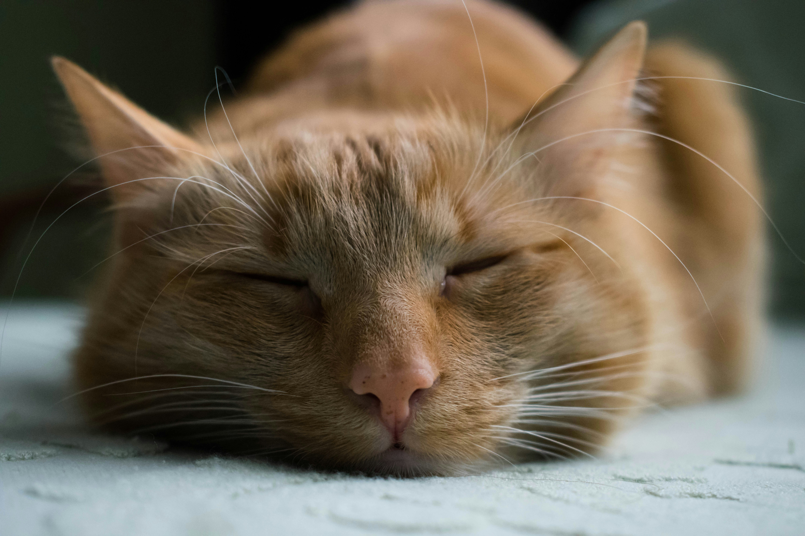
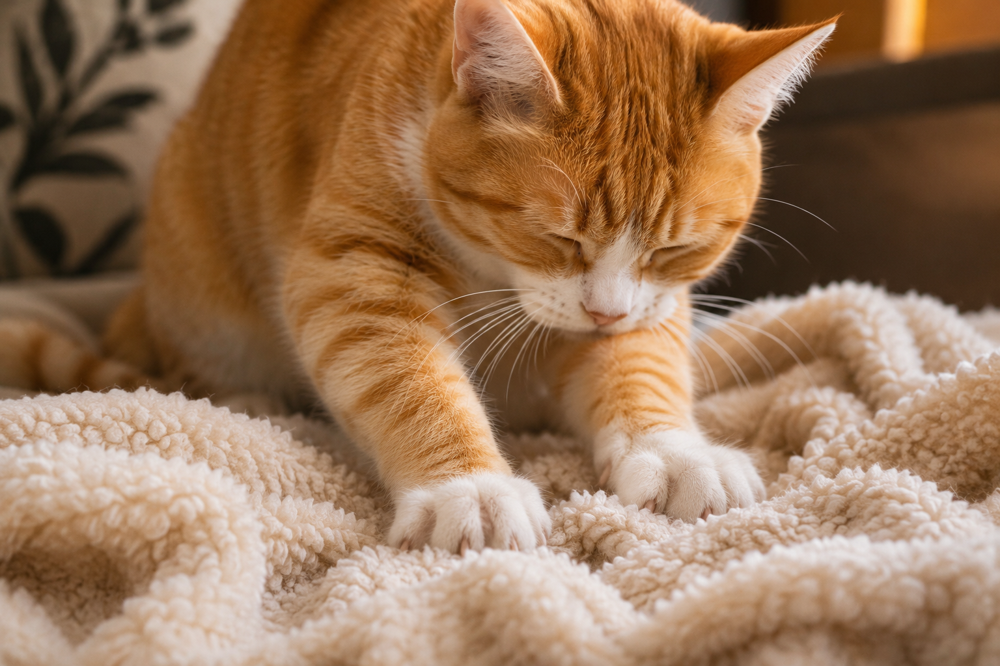
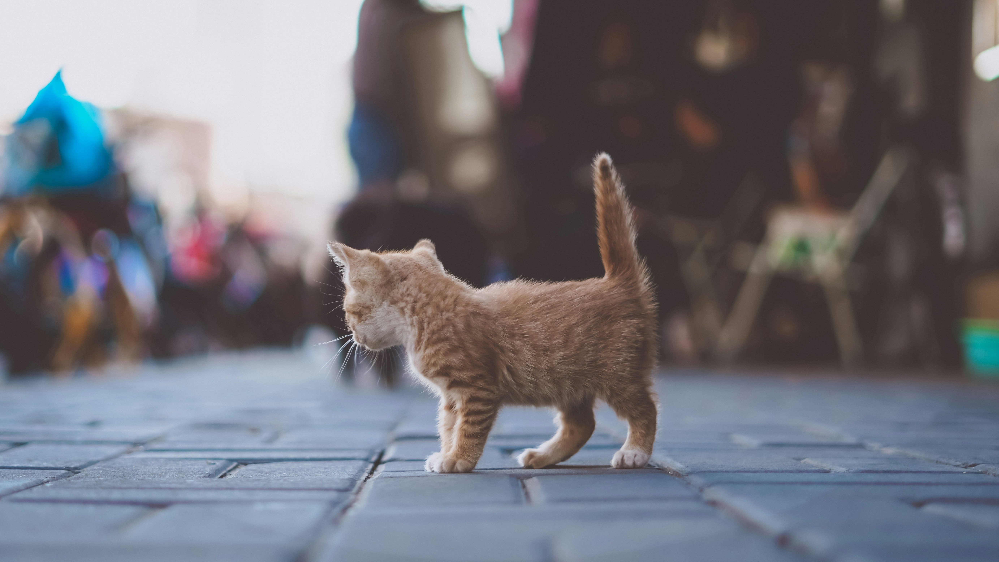
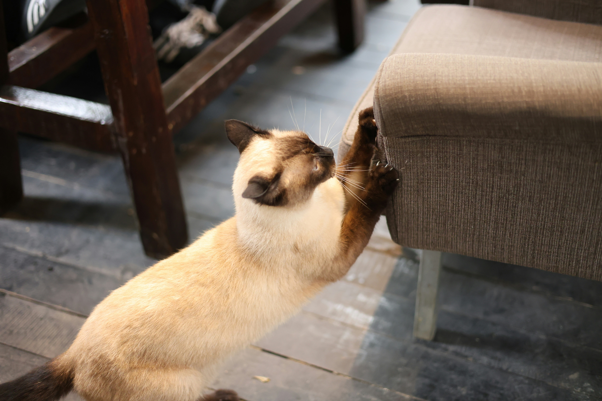
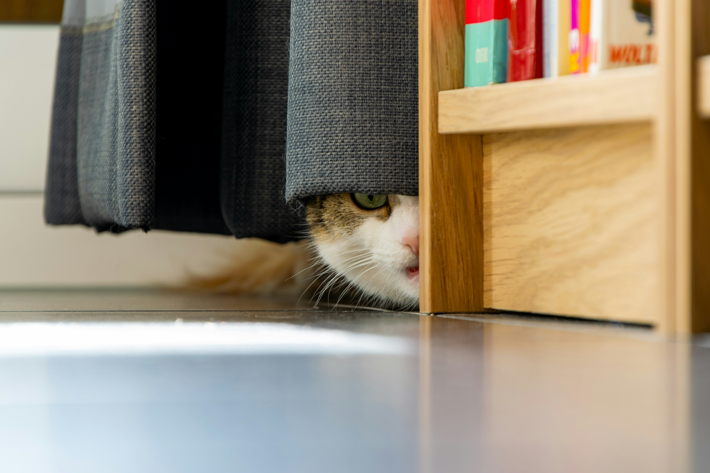
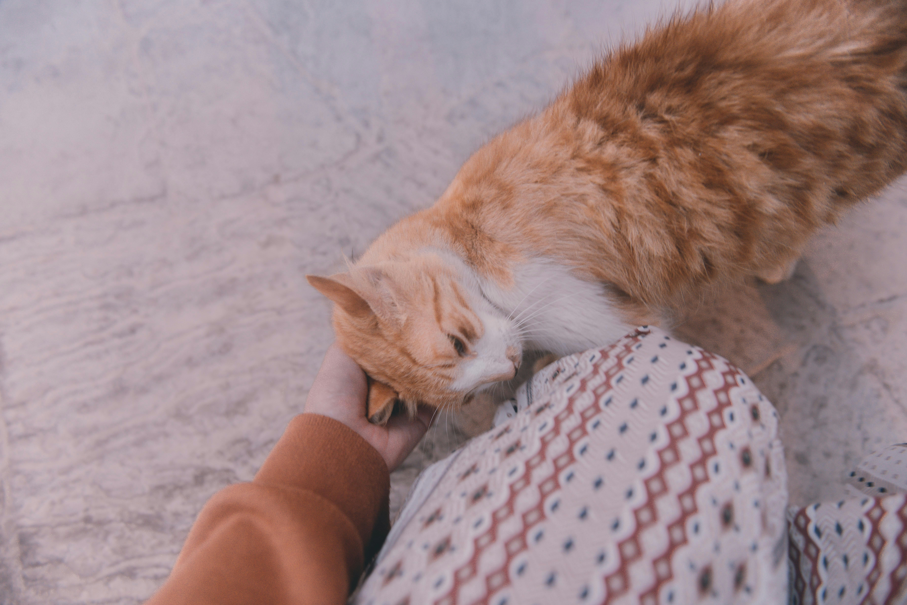
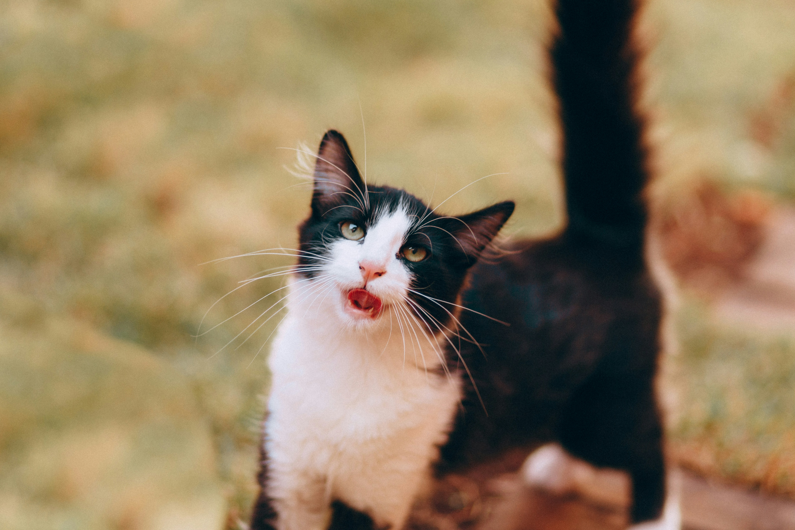

Purring
Cats often purr when they feel relaxed and comfortable. However, they may also purr when stressed or in pain.
Discover what your cat's behaviour mean, learn how they communicate and explore simple ways to keep them happy, active and comfortable
Explore Cat Behaviour ↓
Cats often purr when they feel relaxed and comfortable. However, they may also purr when stressed or in pain.

Kneading happens when cats rhythmically push their paws against soft surfaces. It is often associated with comfort and relaxation.

A cat's tail can reveal its mood. An upright tail may indicate friendliness, while a rapidly flicking tail can signal irritation.

Scratching helps cats maintain their claws, stretch their bodies, and mark their territory. Provide suitable scratching posts.

Cats may hide when they feel nervous, overwhelmed, or simply want some quiet time. Give them a safe space to retreat to.

When cats rub against people or objects, they often leave their scent behind. This can be a way of marking familiar surroundings.

Meowing, chirping, and other sounds are ways cats communicate. Their meaning can depend on the situation and the individual cat.